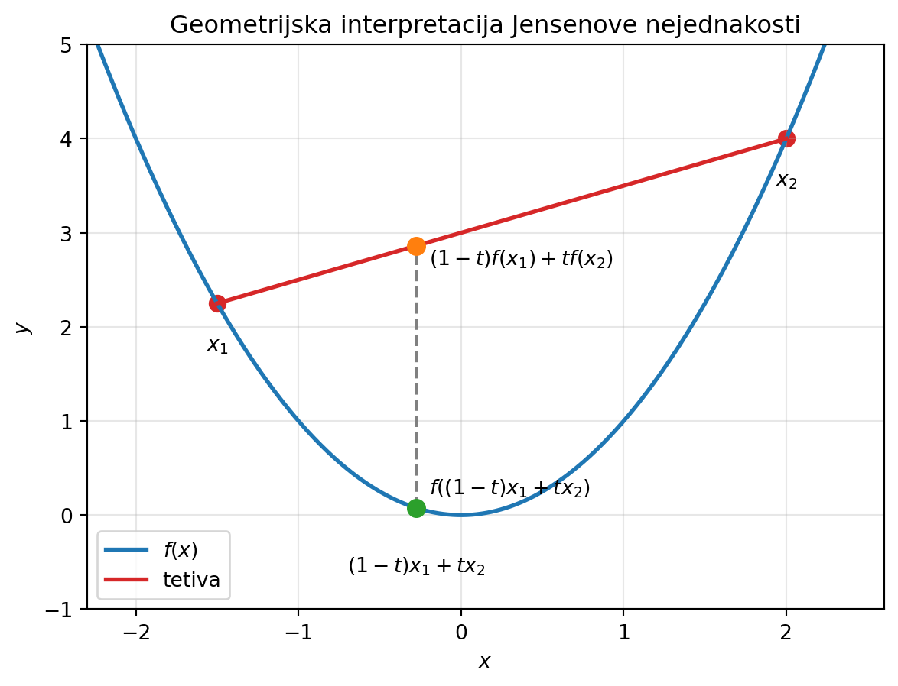

U ovom poglavlju dajemo dovoljne uvjete za određivanje ekstrema funkcije.
Neka je \(I \subseteq \mathbb{R}\) otvoren interval, \(f \colon I \to \mathbb{R}\), \(f \in C^{n+1}(I)\). Neka je \(c \in I\) stacionarna točka, tj. \(f'(c) = 0\). Ako postoji \(n \in \mathbb{N}\), takav da \(\forall k \in \{1,...,n\}\) vrijedi \(f^{(k)}(c) = 0\) i \(f^{(n+1)}(c) \neq 0\), tada u slučaju
kada je \(n+1\) paran broj i \(f^{(n+1)}(c) > 0\), \(f\) ima u \(c\) strogi lokalni minimum.
kada je \(n+1\) paran broj i \(f^{(n+1)}(c) < 0\), \(f\) ima u \(c\) strogi lokalni maksimum.
kada je \(n+1\) neparan broj, \(f\) nema u \(c\) lokalni ekstrem (ima horizontalnu infleksiju).
Dokaz izostavljamo, u suportnom bismo morali uvesti Taylorov polinom što za naše potrebe nije bitno.
U praksi ćemo najčešće provjeravati predznak druge derivacije funkcije \(f\), rijetko je potrebno ići prema derivacijama višeg reda. Tada za \(f''(c)<0\) imamo lokalni maksimum u \(c\), a ako je \(f''(c)>0\) lokalni minimum u \(c\).
Ispitati lokalne ekstreme funkcije \(f(x) = \dfrac{1}{4}x^4-x^3-2x^2+1\).
Kako je \(f\) polinom, klase je \(C^\infty (\mathbb{R})\). Imamo \(f'(x) = x^3 - 3x^2-4x\) i \(f''(x)=3x^2-6x-4\). Stacionarne točke su \(x_1 =−1, x_2 = 0\) i \(x_3 = 4\). Vrijedi \(f''(−1) = 5 >0, f''(0) =−4 <0, f''(4) = 20 >0\), pa su točke lokalnih ekstrema:
Uočimo da ove metode ne određuju globalne ekstreme već lokalne. Kad bi se tražio globalni ekstrem potrebna je dodatna argumentacija.
Konveksne funkcije, infleksija
Za realnu funkciju \(f\) kažemo da je konveksna na intervalu \(I \subseteq \mathbb{R}\) ako \[
(\forall x_1,x_2 \in I) \quad f\left (\dfrac{x_1+x_2}{2} \right ) \leq \dfrac{f(x_1)+f(x_2)}{2}
\]
Funkcija je strogo konveksna ako je za \(x_1 \neq x_2\) nejednakost stroga.
Funkcija \(f\) je konkavna ako \[
(\forall x_1,x_2 \in I) \quad f\left (\dfrac{x_1+x_2}{2} \right ) \geq \dfrac{f(x_1)+f(x_2)}{2}
\]
Funkcija je strogo konveksna ako je za \(x_1 \neq x_2\) nejednakost stroga.
Iskažimo Jensenovu nejednakost za lakše shvaćanje konveksnosti:
Neka je \(f \colon I \to \mathbb{R}\) funkcija definirana na otvorenom intervalu \(I \subseteq \mathbb{R}\). Funkcija \(f\) je neprekidna i konveksna na \(I\) ako i samo ako vrijedi nejednakost \[
(\forall x_1,x_2 \in I)(\forall t \in [0,1]) \quad f((1-t)x_1+tx_2) \leq (1-t)f(x_1) + tf(x_2)
\]
Ako jednakost vrijedi za neko \(t \in \langle 0,1 \rangle\), onda jednakost vrijedi \(\forall t \in [0,1]\).
Izraz \((1-t)x_1+tx_2\) zovemo konveksna kombinacija. Formalno definiramo:
Neka su \(x_1,...x_k \in \mathbb{R}^n\). Definiramo konveksnu kombinaciju kao \[
\alpha _1 x_1 + \cdots + \alpha _k x_k
\]
za \(\alpha _i \in \mathbb{R}\) takvi da vrijedi \(\alpha _1 + \cdots + \alpha _k = 1\).
Prikaži Python kod
import numpy as npimport matplotlib.pyplot as plt# Konveksna funkcijadef f(x):return x**2# Točkex1 =-1.5x2 =2.0t =0.35# Točka iz Jensenove nejednakostix = (1- t) * x1 + t * x2# Vrijednostiy = f(x)y_chord = (1- t) * f(x1) + t * f(x2)# Graf funkcijexx = np.linspace(-2.3, 2.6, 500)fig, ax = plt.subplots(figsize=(7,5))ax.plot(xx, f(xx), lw=2, label=r"$f(x)$")# Tetivaax.plot([x1, x2], [f(x1), f(x2)], color="tab:red", lw=2, label="tetiva")# Točke A i Bax.scatter([x1, x2], [f(x1), f(x2)], color="tab:red", s=60)# Jensenova točka na grafuax.scatter(x, y, color="tab:green", s=70, zorder=5)# Točka na tetiviax.scatter(x, y_chord, color="tab:orange", s=70, zorder=5)# Okomicaax.vlines(x, y, y_chord, colors="gray", linestyles="--")ax.text(x1, f(x1)-0.5, r"$x_1$", ha="center")ax.text(x2, f(x2)-0.5, r"$x_2$", ha="center")ax.text(x, -0.6, r"$(1-t)x_1+tx_2$", ha="center")ax.text(x+0.08, y+0.15, r"$f((1-t)x_1+tx_2)$", fontsize=10)ax.text(x+0.08, y_chord-0.2,r"$(1-t)f(x_1)+tf(x_2)$", fontsize=10)ax.set_xlim(-2.3,2.6)ax.set_ylim(-1,5)ax.set_xlabel("$x$")ax.set_ylabel("$y$")ax.set_title("Geometrijska interpretacija Jensenove nejednakosti")ax.grid(alpha=0.3)ax.legend()plt.show()

Iz priloga vidimo da je slika konveksne kombinacije dviju točaka manja od konveksne kombinacije slika tih točaka.
Neka je \(f \colon I \to \mathbb{R}\) diferencijabilna funkcija na otvorenom intervalu \(I \subseteq \mathbb{R}\). Funkcija \(f\) je konveksna na \(I\), ako i samo ako je njena derivacija \(f'\) rastuća funkcija na \(I\).
Zahtjev prethodnog teorema je ekvivalentan s \(f''(x) \geq 0, \forall x \in I\).
Neka je \(I \subseteq \mathbb{R}\) otvoren interval i \(f \colon I \to \mathbb{R}\). Točka \(c \in I\) je točka infleksije ili prijevojna točka, ako postoji \(\delta > 0\) takav da je na intervalu \(\langle c− \delta,c\rangle\) funkcija \(f\) strogo konveksna, a na intervalu \(\langle c,c+ \delta \rangle\) je \(f\) strogo konkavna ili obratno. Još kažemo da je točka \((c,f(c))\) točka infleksije grafa funkcije \(f\).
Neka je \(f \colon I \to \mathbb{R}\) dva puta diferencijabilna funkcija na otvorenom intervalu \(I \subseteq \mathbb{R}\) i neka je \(c \in I\) izolirana nultočka od \(f''\), tj. \(f''(c) = 0\) i \(f''(x) \neq 0\) na nekom intervalu oko \(c\). Točka \(c\) je točka infleksije funkcije \(f\) ako i samo ako funkcija \(f'\) ima u \(c\) strogi lokalni ekstrem.
Konveksnost i konkavnost nam zapravo govori gdje se nalazi tangenta u odnosu na graf. Ako je funkcija na intervalu konveksna, tada je tangenta u točkama tog intervala ispod grafa, a ako je konkavna, tada je tangenta iznad grafa.
Odredimo točke infleksije funkcije \(f(x)=x^4-2x^2+x+1\) te intervale konveksnosti i konkavnosti.
\(f'(x) = 4x^3-4x+1\) i \(f''(x) = 12x^2-4\). Točka \(c\) je točka infleksije ako je \(f''(c) = 0\), odnosno \(12c^2=4\). Dobivamo dvije točke infleksije \(c_1 = -\dfrac{1}{\sqrt{3}}\) i \(c_1 = \dfrac{1}{\sqrt{3}}\). Vidimo da je \(f'' < 0\) na intervalu \(\left \langle -\dfrac{1}{\sqrt{3}}, \dfrac{1}{\sqrt{3}} \right \rangle\), zaključujemo da je na tom intervalu funkcija konkavna, dok je na ostalom dijelu domene konveksna.
Asimptote
Neka je \(I \subseteq \mathbb{R}\) otvoren skup i \(f \colon I \to \mathbb{R}\) funkcija čiji je graf \(\Gamma _f \subset \mathbb{R} \times \mathbb{R}\). Kažemo da je pravac \(p\) asimptota na graf funkcije \(f\) ako udaljenost izmedu pravca i točke \(T \in \Gamma _f\) teži k \(0\) kako se točka \(T\) beskonačno udaljava od ishodišta.
Graf \(\Gamma _f\) ima vertikalnu asimptotu u rubnoj točki područja definicije \(c \in \mathbb{R}\) ako je \(\displaystyle \lim_{x \to c} f(x) = \pm \infty\).
Graf \(\Gamma _f\) ima kosu asimptotu \(y=kx+l\) u \(\pm \infty\) ako:
Radi pokrate smo pisali \(\pm \infty\), ali moramo paziti da lijeva kosa asimptota ne mora biti jednaka desnoj kosoj asimptoti pa je potreban detaljnija analiza.
Uočimo da funkcija ne može istovremeno imati i kosu i horizontalnu asimptotu na istoj grani \(\langle - \infty, 0 \rangle\) ili \(\langle 0, + \infty \rangle\). Isto tako, primijetimo da je horizontalna asimptota poseban slučaj kose asimptote.
Odredimo asimptote sljedećih funkcije \(f(x) = \dfrac{1}{e^x-1}\)
Uočimo da \(f\) nije definirana u \(x=0\) pa je to vertikalna asimptota jer je \(\displaystyle \lim_{x \to 0-} f(x) = - \infty\) i \(\displaystyle \lim_{x \to 0+} f(x) = \infty\).
Odredimo kose ili horizontalne asimptote: \[
\displaystyle \lim_{x \to - \infty} \dfrac{f(x)}{x} = \lim_{x \to - \infty} \dfrac{1}{x(e^x-1)} = 0 = k
\]
Ispitati neprekidnost funkcije i naći točke prekida, ako postoje.
Naći nultočke funkcije i područja stalnog predznaka.
Naći intervale monotonosti i točke lokalnih ekstrema.
Naći intervale konveksnosti i konkavnosti te točke infleksije.
Naći asimptote.
Skicirati graf funkcije.
Također je dobro prilikom skiciranja funkcije odrediti još nekoliko točaka koje je lako izračunati kako bi skica bila što vjernija.
Napomena: osim stacionarnih točaka, kandidati za lokalne ekstreme su i točke u kojima funkcija nije diferencijabilna (primjerice rubovi domene). Jednim imenom sve te kandidate nazivamo kritičnim točkama.
Napomena: u definiciji kritičnih točki i vertikalni asimptota spominjemo rubove domene. Pod time mislimo na topološku definiciju ruba skupa, ali to trenutno nije bitno. Primjerice rub skupa \(\langle 0,1 \rangle \cup \langle 1,2 \rangle\) je \(\{0,1,2 \}\). Kad bi rub bio uključen u dani skup, tada bi skup bio zatvoren i imali bismo \([0,2]\). Zatvoreni skupovi sadrže svoj rub pa je i to bitno razumjeti.
Promotrimo postupak na sljedećim primjerima:
Ispitajte tok funkcije \(\displaystyle f(x) = \frac{x-2}{\sqrt{x^2+1}}\) i skicirajte njezin graf.
1. Domena | Nazivnik mora biti različit od \(0\), a argument drugog korijena veći od \(0\). Imamo:
Primijetimo da je \(x^2+1 >0, \forall x \in \mathbb{R}\). Dakle, domena od \(f\) je \(D_f = \mathbb{R}\).
2. Parnost, neparnost i periodičnost | Radi se o polinomu pa nije periodičan. Ispitajmo (ne)parnost: \[
\displaystyle f(-x) = \frac{-x-2}{\sqrt{(-x)^2+1}} = \frac{-x-2}{\sqrt{x^2+1}}
\]
Funkcija nije ni parna ni neparna.
3. Neprekidnost | Funkcija je kompozicija elementarnih funkcija i definirana je na cijelom \(\mathbb{R}\) pa zaključujemo da je neprekidna na cijeloj domeni.
4. Nultočke | \(f(x) = 0\) ako je \(x-2 = 0\), tj. \(x=2\) je jedina nultočka. Nazivnik je uvijek pozitivan pa predznak funkcije ovisi samo o brojniku. Imamo da je \(f < 0\) za \(x < 2\) i \(f>0\) za \(x>2\).
5. Monotonost i lokalni ekstremi | Računamo \(f'\) i \(f''\): \[
\displaystyle f'(x) = \frac{2x+1}{(x^2+1)^\frac{3}{2}} \qquad f''(x) = \frac{-4x^2-3x+2}{(x^2+1)^\frac{5}{2}}
\]
\(f'(x) = 0\) za \(x = x_0 = \dfrac{-1}{2}\). Funkcija nema drugih kritičnih točki jer je \(f'\) definirana na cijeloj domeni. Dakle, jedini kandidat za lokalni ekstrem je \(x_0 = \dfrac{-1}{2}\). Provjerimo karakter ekstrema: \[
f''(x_0) = f''\left (-\dfrac{1}{2} \right) = 1.431 > 0
\]
pa je \(x_0 = -\dfrac{1}{2}\) lokalni minimum i iznosi \(-\sqrt{5}\).
6. Koveksnost, konkavnost i točke infleksije | Odredimo predznake \(f''\). Uočimo da je nazivnik od \(f''\) veći od \(0\) pa predznak ovisi samo o brojniku. U brojniku je kvadratna funkcija pa se problem svodi na rješavanje nejednadžbe \(-4x^2-3x+2 > 0\). Nultočke navedene funkcije su \(x_{1,2}=\dfrac{-3\pm\sqrt{41}}{8}\). Primijetimo da je tada \(f''(x) > 0\) za \(x \in \left \langle \dfrac{-3-\sqrt{41}}{8}, \dfrac{-3+\sqrt{41}}{8} \right \rangle\). Iz pozitivnosti druge derivacije zaključujemo da je na tom intrvalu funkcija konveksna, a izvan tog intervala je konkavna.
Točke infleksije su nultočke druge derivacije, tj. upravo \(x_{1,2}=\dfrac{-3\pm\sqrt{41}}{8}\).
7. Asimptote | Budući da je funkcija definirana na cijelom \(\mathbb{R}\) nemamo vertikalnih asimptota.
Provjerimo kose asimptote. Moguće je provesti standardni račun, ali postaje kompliciran. Uočimo da je stupanj brojnika od \(f(x)\) točno \(1\), a u nazivniku imamo \(\sqrt{x^2+1}\) što je otprilike stupnja \(1\). Tada zaključujemo da je stopa rasta brojnika i nazivnika gotovo ista pa vrijedi \(\displaystyle \lim_{x \to -\infty} f(x) = -1\) i \(\displaystyle \lim_{x \to \infty} f(x) = 1\) (nazivnik uvijek ide u \(+\infty\) pa predznak ovisi o brojniku, a rekli smo da brojnik i nazivnik rastu jednako brzo pa im je omjer 1).
Naravno, ovo argumentacija odgovara jer se radi o polinomima. Svakako preporučujemo standardni postupak ako intuicija za ovakve argumente nije razvijena.
8. Graf Prije crtanja grafa preporučujemo izradu sljedeće tablice:
\(x\)
\(-\infty\)
\(\longrightarrow\)
\(x_1\)
\(\longrightarrow\)
\(x_0\)
\(\longrightarrow\)
\(x_2\)
\(\longrightarrow\)
\(2\)
\(\longrightarrow\)
\(+\infty\)
\(f'(x)\)
\(-\)
\(+\)
\(+\)
\(+\)
\(+\)
\(f''(x)\)
\(-\)
\(+\)
\(+\)
\(-\)
\(-\)
\(f(x)\)
\(-\searrow \cap\)
\(-\searrow \cup\)
\(-\nearrow \cup\)
\(-\nearrow \cap\)
\(+\nearrow \cap\)
Promatramo intervale između točaka koje su nam bile bitne (nultočke funkcije, nultočke derivacija, vertikalne asimptote…) i ispod pišemo predznake prve i druge derivacije. Iz njih iščitavamo pad i raste od \(f\) te intervale konveksnosti. Ispod rubnih točaka ništa ne pišemo. U zadnjem retku redom označujemo predznak od \(f\), pad/rast i konveksnost/konkavnost (respektivno \(\cup\) i \(\cap\)).
Ispitajte tok funkcije \(\displaystyle f(x) = \frac{2x^3}{x^2-4}\) i skicirajte njezin graf.
1. Domena | Nazivnik mora biti različit od \(0\): \[
x^2 - 4 = 0 \Longleftrightarrow x = \pm 2
\] Dakle, domena je: \[
D_f = \mathbb{R} \setminus \{-2,2\}
\]
2. Parnost, neparnost i periodičnost | Provjerimo parnost: \[
f(-x)=\frac{2(-x)^3}{(-x)^2-4}=\frac{-2x^3}{x^2-4}=-f(x)
\] Funkcija je neparna, pa je graf centralno simetričan u odnosu na ishodište. Nije periodična.
3. Neprekidnost | Funkcija je racionalna pa je neprekidna na svojoj domeni, tj. na \(\mathbb{R}\setminus\{-2,2\}\), a u točkama \(\pm 2\) ima prekid druge vrste, zaključujemo da će tamo imati i vertikalne asimptote.
4. Nultočke | \[
\frac{2x^3}{x^2-4}=0 \Longleftrightarrow 2x^3=0 \Longleftrightarrow x=0
\] Jedina nultočka je \(x=0\).
5. Monotonost i lokalni ekstremi |
Računamo prvu i drugu derivaciju: \[
f'(x)=\frac{2x^2(x^2-12)}{(x^2-4)^2} \qquad f''(x)=\frac{4x(x^2+12)}{(x^2-4)^3}
\]